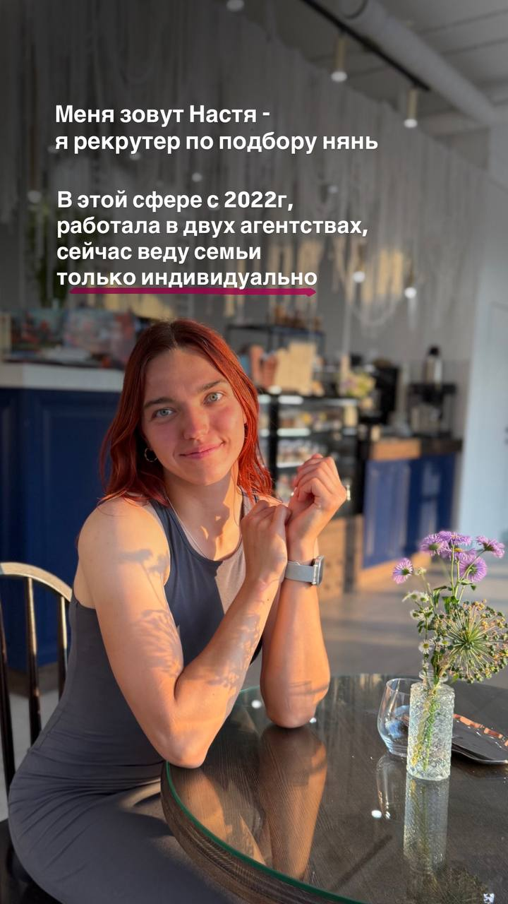

Сначала — ваша семья
Обсуждаем ритм жизни, привычки ребёнка и ваши взгляды на воспитание. Складываем живой портрет человека, которого вы хотите видеть рядом.
Подробный разговор и согласованный запросЯ беру на себя поиск, собеседования и проверки. А вам оставляю главное — выбрать человека, с которым хочется быть одной командой.

И подбор строится вокруг неё. Чтобы совпали не только графики, но и взгляды на то, как быть рядом с ребёнком.
Обсуждаем ритм жизни, привычки ребёнка и ваши взгляды на воспитание. Складываем живой портрет человека, которого вы хотите видеть рядом.
Подробный разговор и согласованный запросРассказываю кандидату о семье и разбираю реальные ситуации: детские эмоции, уроки, конфликты между детьми. Ищу близость подходов, а не только опыт в анкете.
Ситуативные вопросы именно про вашу семьюПередаю подробный профиль и личные комментарии. Обсуждаем сильные стороны, нюансы и то, почему этот человек может подойти именно вам.
Подробный профиль и личные рекомендацииКоличество кандидатов не ограничено. Ведём поиск до подходящего человека.

С 2022 года подбираю нянь для семей. Работала в двух агентствах, а сейчас веду семьи только индивидуально.
До подбора пять лет работала с детьми: няней, тренером и педагогом. Поэтому понимаю и ожидания родителей, и то, что важно человеку, которого вы приглашаете в семью.
Мне важно, чтобы вас услышали.Мой пост о личном подходе ↗
А няне и ребёнку было хорошо вместе.
На каждом этапе у семьи есть понятный результат и возможность обсудить всё лично со мной.
Вы рассказываете о семье, ребёнке и желаемой помощи. Я слушаю и уточняю детали.
Понимание задачи и удобного формата работы.
Определяем задачи, график, критерии поиска и важные для семьи качества няни.
Согласованный портрет вашей няни.
Отбираю кандидатов и провожу интервью в контексте вашей семьи. Обсуждаю с вами каждого человека.
Подробные профили с моими комментариями.
Организуем встречу с подходящими кандидатами. Обсуждаем ваши впечатления и пробные дни.
Возможность понять, как вам вместе.
Поддерживаю после выхода няни на работу. Если понадобится замена, действует гарантийный срок.
Связь со мной и гарантия замены 6 месяцев.
Стоимость и сроки — из предоставленного брифа. Перед рабочим запуском подтвердим актуальность.
Беру поиск на себя и сопровождаю вашу семью на всех этапах.
полная оплата после 1–2 пробных недель. Ориентир поиска — 1–1,5 месяца.
Обсудить подборПомогу разобраться в запросе и подготовиться к самостоятельному поиску.
продолжительность консультации — 1,5–2 часа.
Обсудить консультациюОбсуждаем обратную связь, уточняем пожелания и продолжаем поиск. Количество кандидатов не ограничено.
Да, остаюсь на связи после начала работы. Если понадобится замена, предусмотрена гарантия бесплатной замены в течение 6 месяцев.
Да. Она подходит, если хотите искать самостоятельно: разберём запрос, подготовим текст вакансии и чек-листы для интервью.
Настя помогла нам найти няню для дочки. Очень внимательная, задаёт правильные вопросы, быстро понимает, что важно именно нашей семье.
Мы искали няню через агентства, но Настя подобрала нам кандидата из своей базы. Очень благодарны за подход и поддержку!
Добрый вечер! Отлично, Настя, спасибо! Юра вчера весь вечер спрашивал, когда вы ещё придёте, кроме сегодня 🙂
Отзывы из предоставленных материалов. Тексты и согласия подтвердим перед рабочим запуском.
Расскажите немного о ребёнке и вашей семье. Вместе поймём, какая помощь нужна вам сейчас.
Telegram Анастасии ↗С заботой о самом важном.